8天让iOS开发者上手Flutter之八
介绍四种 Flutter Project
先介绍一下这四个的差别和使用的场景。
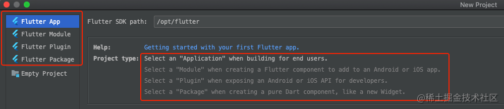
Flutter App
如果是想要使用 flutter 开发一个新的项目，那么就选择 Flutter App。就像我们之前的 wechat_demo
Flutter Module
但是很多时候我们目前手上的原生 APP 可能会很庞大，不是随便就可以重新使用 flutter 重新再写一遍的。但是又想在现有的 APP 中体验一下 flutter，那么就选择 Flutter Module
Flutter Package
Flutter 支持使用其他开发者向 Flutter 和 Dart 生态系统贡献的共享 package(类似于 iOS 中的第三方库吧，AFNetworking，YYKit等等…)，这意味着你可以快速构建应用而不是一切从零开始。
Package 最低要求是包含一个 pubspec.yaml 文件。此外，一个 package 可以包含依赖关系 (在 pubspec.yaml 文件里声明)、 Dart 库、应用、资源、测试、图片和例子等。 pub.dev 上列出了很多 package，由 Google 工程师和 Flutter 和 Dart 社区的开发者开发和发布，你可以用在自己的应用里。
Flutter Plugin
插件 (plugin) 是 package 的一种，全称是 plugin package，我们简称为 plugin，中文叫插件。插件 (plugin package) 是一种特别的 package，特别指那些帮助你获得原生平台特性的 package。插件可以为 Android (使用 Kotlin 或 Java 语言)、 iOS (使用 Swift 或 Objective-C 语言)、Web、macOS、Windows、Linux 平台，或其任意组合的平台编写。比如：某个插件可以为 Flutter 应用提供使用原生平台的摄像头的功能。
使用 Flutter Module 进行混合开发
我们前七天开发的项目就是 Flutter App，今天主要介绍如何使用 Flutter Module 进行混合开发。混合开发官方推荐只使用单个 Flutter 页面，多个 Flutter 页面也能支持，但有可能会出现稳定性、性能问题以及 API 仍然可能变动的问题。请大家谨慎使用。官方介绍链接
iOS 原生项目中导入 Flutter
准备一个原生 iOS 项目
进行混合开发就一定需要一个原生项目，根据你的需求，可以使用目前手上的 APP，也可以临时创建一个 Demo 来先练练手。我们这里就临时新建一个 iOS 原生 Demo。
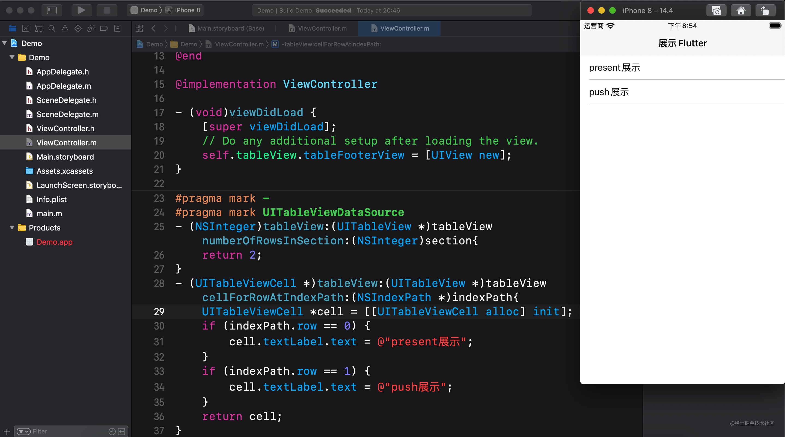
这个原生项目很简单，就这么两行代码。
新建 Flutter Module 项目
新建一个 Flutter Module 项目，项目名就叫 module。
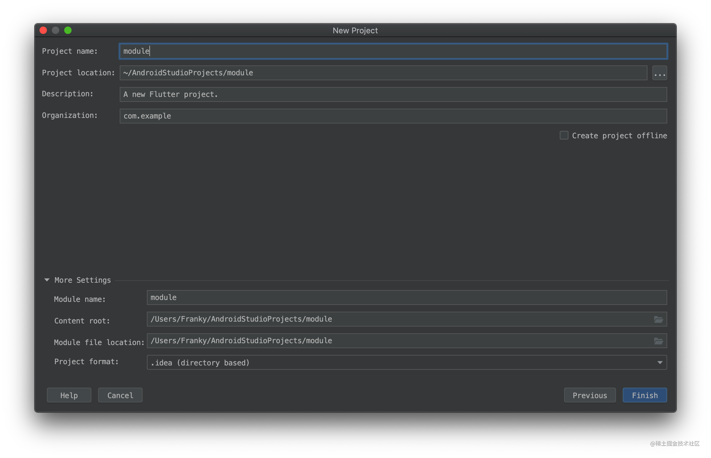
最好将两个项目放在同级目录下，因为原生项目需要知道 Flutter Module 项目的位置。
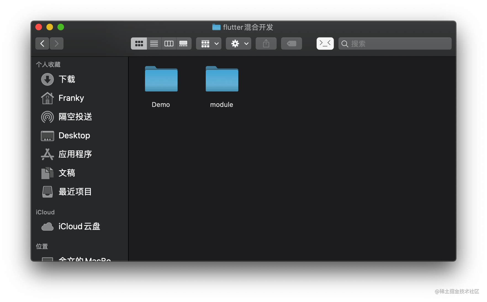
使用 cocoapods 建立关联
在原生项目 Demo 里建立 Podfile 文件,然后编辑 Podfile。
1 | flutter_application_path = 'Podfile相对flutter module的路径' |
在每个需要集成 flutter module 的 target 添加如下代码
1 | target '你的APP' do |
编辑完之后的 Podfile 如下。
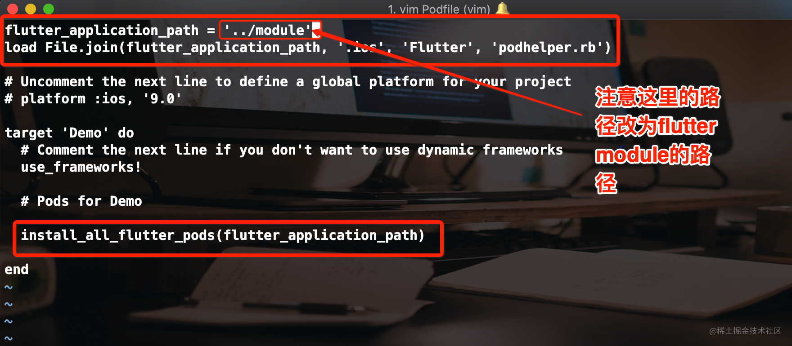
然后执行 pod install 命令
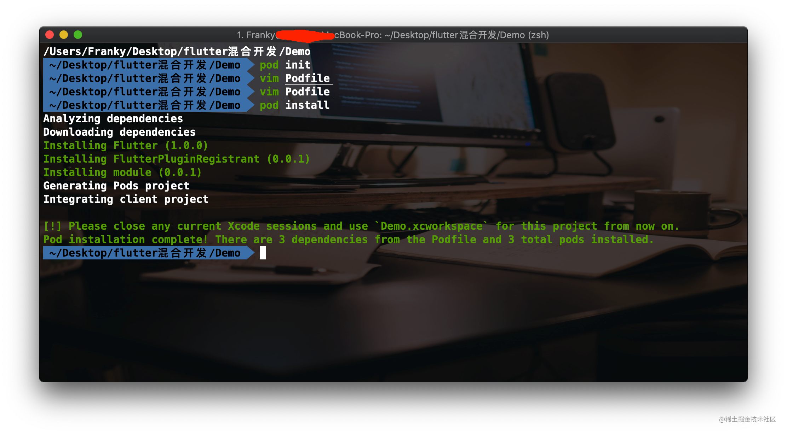
如上图所示就表示集成好了。就接下来就是如何在原生项目中展示 flutter 的内容了。
展示单个 Flutter 页面
展示单个 Flutter 页面的方式有两种，一种是使用 FlutterEngine 的方式，一种是不使用 FlutterEngine 的方式，其实不使用 FlutterEngine 的说法是不严谨的，只是我们没有使用代码创建 FlutterEngine 而已，Flutter 框架内部自己创建了 FlutterEngine，但是为了方便记忆，我们可以这么理解。但是这种不使用 FlutterEngine 的方式官方并不推荐。
因为按需创建 FlutterEngine 的话，在 FlutterViewController 被 present 出来之后，第一帧图像渲染完之前，将会引入明显的延迟。但是当 Flutter 页面很少被展示时，当对决定何时启动 Dart VM 没有好的启发时，当 Flutter 无需在页面（view controller）之间保持状态时，此方式可能会有用。
不使用 FlutterEngine 展示单个 Flutter 页面(官方并不推荐)
来到 ViewController.m 文件中导入 Flutter 的头文件
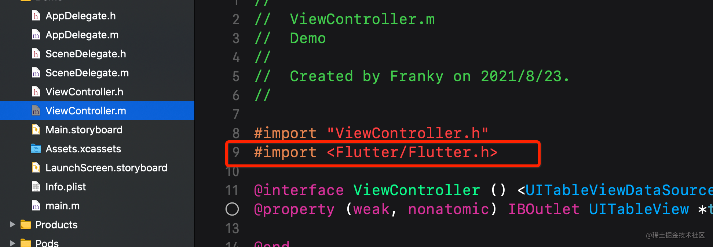
直接创建 FlutterViewController 对象，并使用 present 和 push 两种方式展示
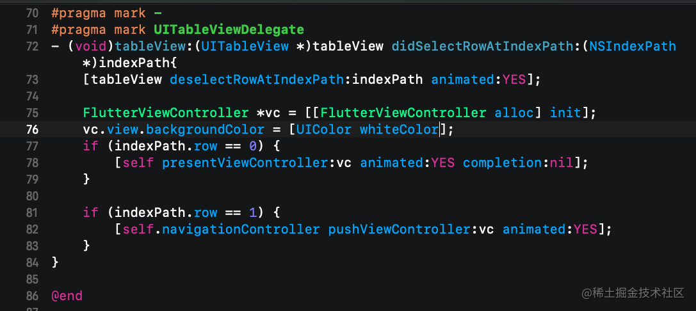
APP显示如下图所示：
present方式显示如图：
push方式显示如图：
使用 FlutterEngine 展示单个 Flutter 页面
创建 FlutterEngine
创建 FlutterEngine 的合适位置取决于您的应用。作为示例，我们将在应用启动的 AppDelegate 中创建一个 FlutterEngine，并作为属性暴露给外界。
在 AppDelegate.h 中
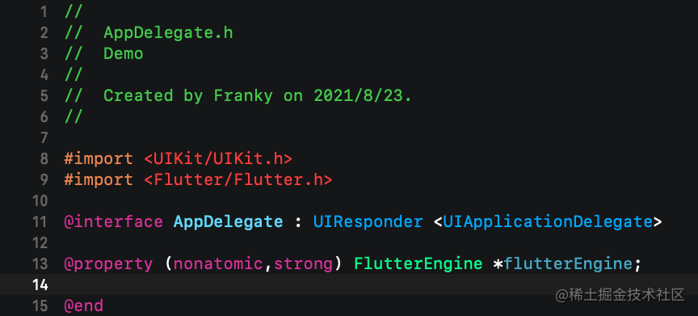
在AppDelegate.m中
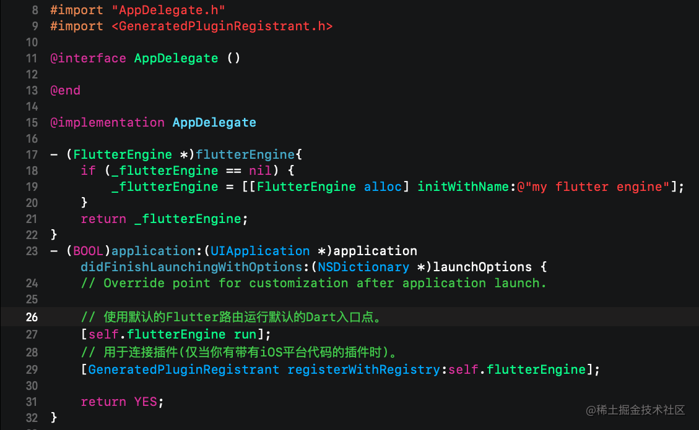
展示 FlutterViewController
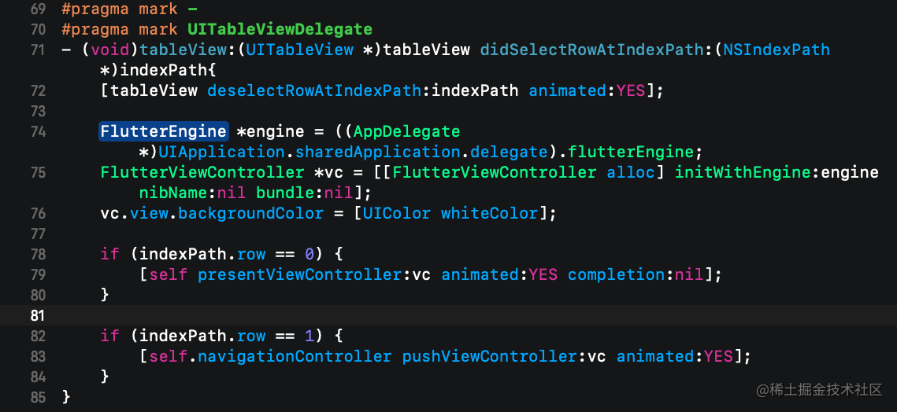
现在，你的 iOS 应用中集成了一个 Flutter 页面。
展示多个 Flutter 页面
使用上面的方式，最终展示的 Flutter 页面都是同一个页面。而在实际混合开发中，想要展示多个不同的 Flutter 页面的需求应该是普遍的。那么 Flutter 能做到吗？答案是可以的，官方的说法是自 Flutter 2.0.0 开始，可以同时添加多个 Flutter 实例。由于稳定性，性能问题以及 API 任然可能变动，请谨慎使用。链接
使用 FlutterEngineGroup
展示多个 Flutter 页面需要使用到 FlutterEngineGroup 来创建 FlutterEngine,而不是上面直接使用 FlutterEngine 的方式。
在AppDelegate.h中
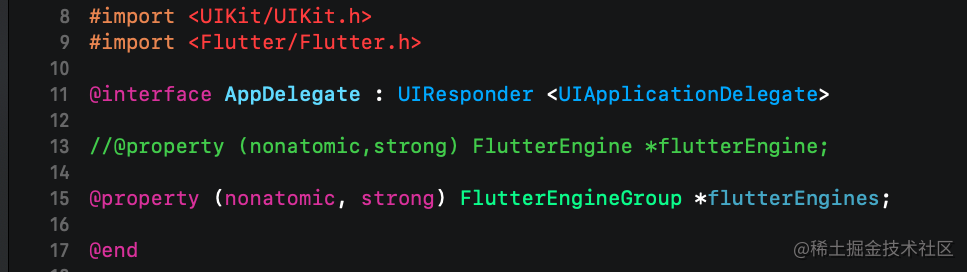
在AppDelegate.m中
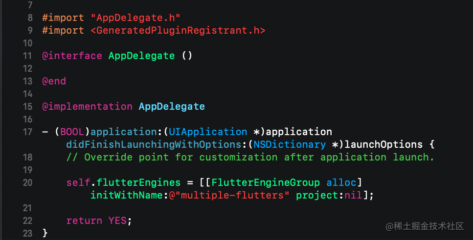
新建一个 flutter 页面
来到 Android Studio 中的 Flutter module 项目，新建一个 page_two.dart 文件，并做些简单的展示
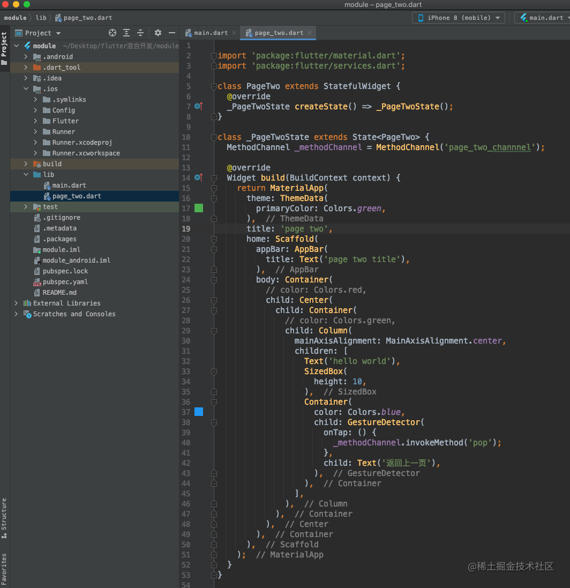
PageTwo 页面写好之后，还需要到 main.dart 文件中声明一个新的 dart 入口。这样才能在原生中找到这个 PageTwo 页面,代码如图：
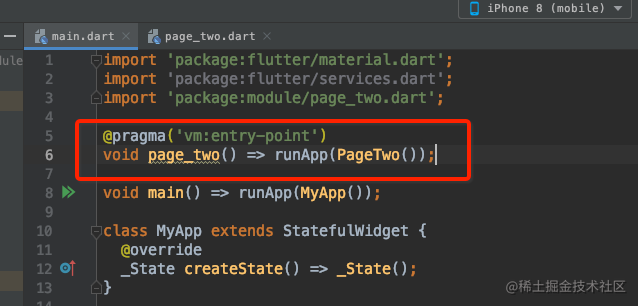
page_two 就是 PageTwo 的入口函数，在原生中待会就会用到。
展示两个 Flutter 页面
回到原生项目的 ViewController.m 文件中，实现如下代码：
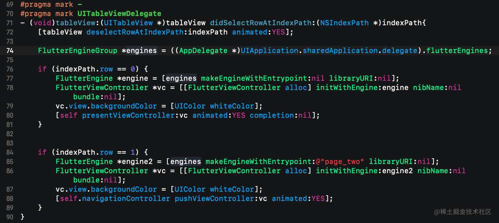
在第0行，我们创建 engine 的时候，并没有传入 Entrypoint 参数，所以就会展示默认的入口函数 main 对应的页面。在第 1 行中，我们创建 engine 的时候，指定了入口函数为 page_two，那么就会展示 page_two() 所对应的页面。
present 展示的页面如图：
push展示的页面如图：
Flutter 与 iOS 端通信
Flutter 和 iOS 端的通信主要是使用各种通道。有MethodChannel，BasicMessageChannel,EventChannel等等，这里主要介绍前面两种通道。通道通过名称来建立联系，所以通道的名称需要确保是唯一的。如果有同名的通道，通信会受到干扰
MethodChannel 方法通道
方法通道主要用了传递方法名称和参数。在前面我们新建 PageTwo 的时候，就已经创建了一个 MethodChannel 了，名字为 page_two_channel。然后在文本‘返回上一页’的点击手势里面调用了一个方法 invokeMethod()。这个方法可以传递多个参数，第一个参数就是方法名称，后面是方法参数。我们这里没有参数，就只传入一个方法名 pop。那么 Flutter 端的工作就完成了，再回到我们的 iOS 原生端，ViewController.m 里面。实现如下代码：
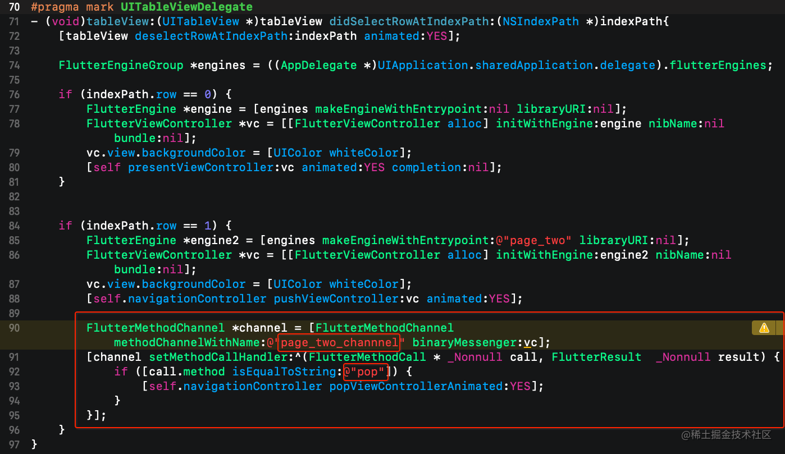
在 iOS 中给 MethodChannel 加了一个 Flutter 前缀。然后初始化 FlutterMethodChannel 的时候，传入的名字一定要和 flutter 端是一致的，不然是无法建立通讯的。然后调用 setMethodCallHandler: 方法传入一个 block 参数。block 参数会在 channel.invokeMethod() 的时候被调用。block 参数 call 就是对 invokeMethod 参数的一个封装。call 的 method 就是方法名，还有一个 arguments 就是方法参数。这样就可以根据方法名进行判断后作出处理了。现在是从 flutter 向 iOS 原生通信，实现了在 flutter 中点击方法实现了 pop 回到上个页面的。相反的，也可以从 iOS 端向 flutter 端通信。在 iOS 端，使用 channel 调用 invokeMethod() 就可以向 flutter 发送消息了，在 flutter 端同样设置 channel 的 setMethodCallHandler 就可以接收了。
flutter 端 setMethodCallHandler 代码如下：
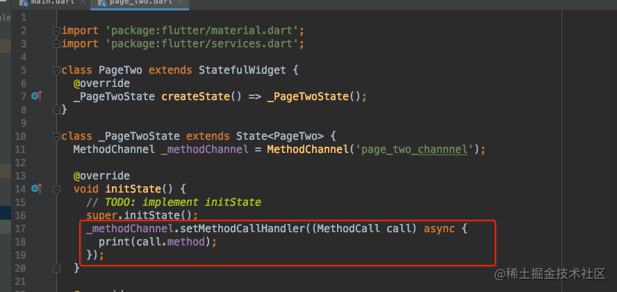
这里说一句，这些通道不能在无状态的 Widget 里使用，改为有状态的就可以了。
BasicMessageChannel 基础消息通道
除了上面提到的 MethodChannel，你还可以使用BasicMessageChannel，它支持使用自定义消息编解码器进行基本的异步消息传递。 此外，您可以使用专门的 BinaryCodec，StringCodec和 JSONMessageCodec类，或创建自己的编解码器。
BasicMessageChannel 这个通道的使用方法跟上面的 MethodChannel 是一样的，不同点是在 flutter 中创建 BasicMessageChannel 这个通道需要传入一个编解码器，使用一个标准的编解码器 StandardMessageCodec 可以将基本的数据类型进行编解码。BasicMessageChannel 通道可以实现基础数据类型的通讯。iOS 和 flutter 的基础数据类型对应编解码关系：
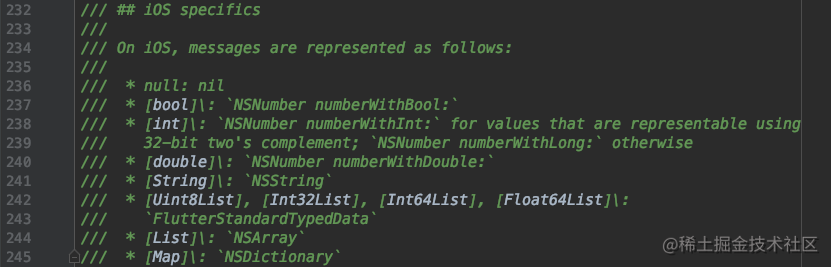
总结
本来还想写一个混合开发的实际案例的，但是鉴于本人目前的重点并不是 flutter，而且网上也有较多的介绍这种混合开发的实际案例，所以这里篇文章就写到这里了。这 8 篇文章的内容应该说只是一个 iOSer 入门 flutter 的教程，只是些皮毛东西，离掌握 flutter，Dart 还差的很远。而 flutter 的出现也并不是说会完全取代 Android 和 iOS 开发者，flutter 只能用来搭建一套各平台统一的 UI，而各个平台相关的功能，和硬件相关的需求，都依然需要各个平台的开发者去实现。